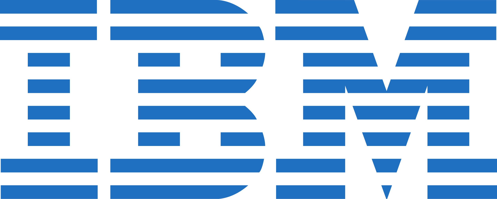
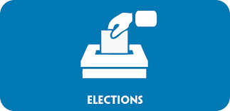

The Austin Chamber of Commerce is a network and a voluntary association of local businesses with the goal to further the interests our businesses. Our members are business owners who advocate on behalf of the business community in our elected council or as representatives and spokespersons. This site will introduce our organization to the public and communicate our goals.
Our Companies of the Month
IBM
IBM Research - Austin is one of 12 IBM research laboratories worldwide. Scientists, designers, engineers, developers and other experts work together in the lab on a variety of focus areas including hardware development, software development, system architectures and advancements in cognitive computing and AI. Specific projects include flood prediction modeling, 3D microprocessor transistor design, and Main Memory Power, Performance, and Reliability Research as well as applying AI to industry challenges such as improving elder care.
Dell
Dell is an American multinational computer technology company that develops, sells, repairs, and supports computers
and related products and services, and is owned by it's parent company of Dell Technologies. Founded in 1984 by Michael Dell, the company is
one of the largest technology corporations in the world, employing more than 165,000 people in the U.S. and around the world.
The headquater is located in Round Rock, TX.
Dell sells personal computers (PCs), servers, data storage devices, network switches, software, computer peripherals, HDTVs, cameras,
printers, and electronics built by other manufacturers. The company is well known for its innovations in supply chain management and electronic commerce,
particularly its direct-sales model and its "build-to-order" or "configure to order" approach to manufacturing—delivering individual PCs configured to
customer specifications.
Dell was a pure hardware vendor for much of its existence, but with the acquisition in 2009 of Perot Systems, Dell
entered the market for IT services. The company has since made additional acquisitions in storage and networking systems, with the aim of expanding
their portfolio from offering computers only to delivering complete solutions[buzzword] for enterprise customers.
Seton Family of Hospitals
Seton Family of Hospitals, is a Roman Catholic-affiliated hospital network in the Greater Austin area.
It is a member of Ascension Health, a not-for-profit health organization located in St. Louis, Missouri.
In 2011, Seton partnered with the University of Texas System Board of Regents and the University of Texas Southwestern Medical Center in Dallas,
one of the nation's leading academic medical centers, to increase the amount of medical education and medical research conducted in Central Texas.
Austin CyberKnife is based in the Clinical Education Center, on the campus of the former University Medical Center Brackenridge campus.
The Austin CyberKnife Center is a cancer treatment center using CyberKnife technology to treat malignant and benign tumors throughout the body.
It has a Lung Optimization Treatment (LOT) System.
The Seton Family of Hospitals headquarters are located in Austin.
Upcoming Events
Election day
A new Board of Directors will be elected.
Panel Discussion
Mayor Adler will discuss the plans for the development of the new North East Industrial Estate.
Job Fair
Member companies offer their current vacancies. Bring your application and talk to the campany representitives.
Note: Texts and picures were retieved from Google and Wikipedia.